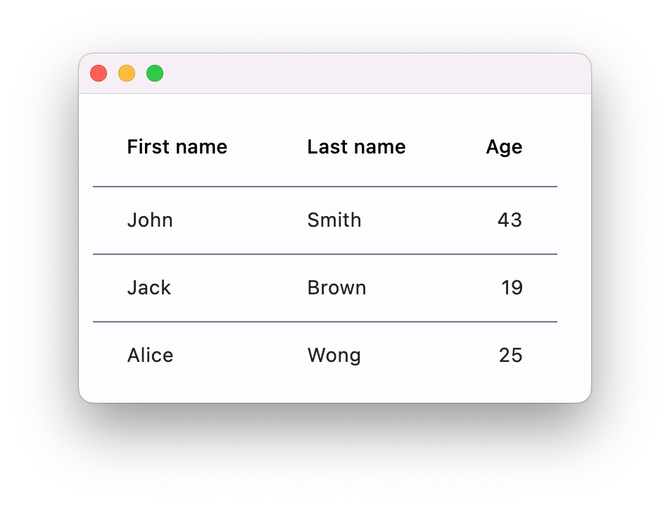
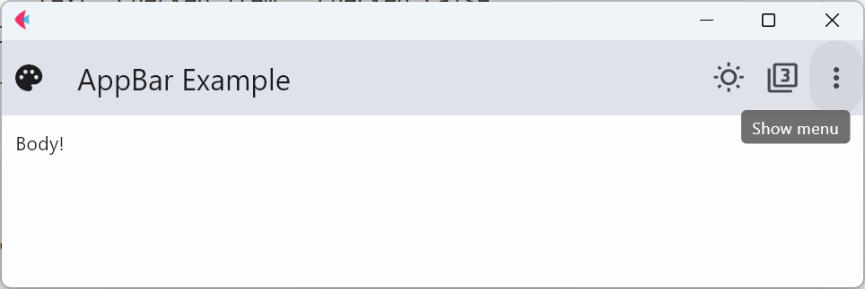
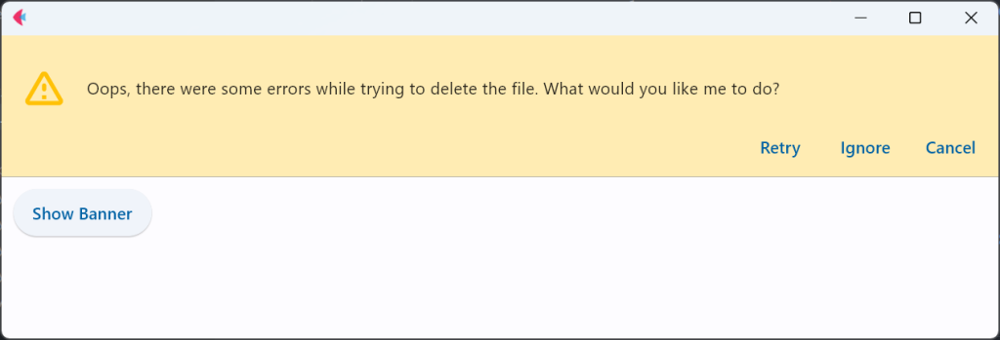

介绍
这是Flet的页面布局介绍，来源于官网文档：Layout | Flet

img
页面布局
Page
Page是View控件的容器，Page实例和和根视图是在新用户会话启动时自动创建的。
属性
当属性值为True，滚动条会自动滚动至页面尾部。
appbar
显示页面顶部导航栏。
1 2 3 4 5 6 7 8 9 10 11 12 13 14 15 16 17 18 19 20 21 22 23 24 25 26 27 28 29 30 import flet as ft def main(page: ft.Page): def check_item_clicked(e): e.control.checked = not e.control.checked page.update() page.appbar = ft.AppBar( leading=ft.Icon(ft.icons.PALETTE), leading_width=40, title=ft.Text("AppBar Example"), center_title=False, bgcolor=ft.colors.SURFACE_VARIANT, actions=[ ft.IconButton(ft.icons.WB_SUNNY_OUTLINED), ft.IconButton(ft.icons.FILTER_3), ft.PopupMenuButton( items=[ ft.PopupMenuItem(text="Item 1"), ft.PopupMenuItem(), # divider ft.PopupMenuItem( text="Checked item", checked=False, on_click=check_item_clicked ), ] ), ], ) page.add(ft.Text("Body!")) ft.app(target=main)

img
appbar
banner
显示页面顶部横幅。
1 2 3 4 5 6 7 8 9 10 11 12 13 14 15 16 17 18 19 20 21 22 23 24 25 26 27 import flet as ft def main(page): def close_banner(e): page.banner.open = False page.update() page.banner = ft.Banner( bgcolor=ft.colors.AMBER_100, leading=ft.Icon(ft.icons.WARNING_AMBER_ROUNDED, color=ft.colors.AMBER, size=40), content=ft.Text( "Oops, there were some errors while trying to delete the file. What would you like me to do?" ), actions=[ ft.TextButton("Retry", on_click=close_banner), ft.TextButton("Ignore", on_click=close_banner), ft.TextButton("Cancel", on_click=close_banner), ], ) def show_banner_click(e): page.banner.open = True page.update() page.add(ft.ElevatedButton("Show Banner", on_click=show_banner_click)) ft.app(target=main)

img
banner
方法
事件
View
Container
Row
Column
Stack
ListView
ListTItle
GridView
ResponsiveRow
DataTable
Tabs
Card
Divider
VerticalDivider